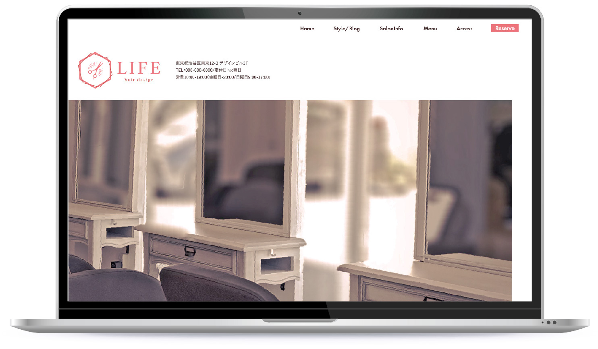

WORKS
仮想案件制作
美容室「LIFE」
ホームページ
デザインのみ


内容：仮想案件の制作
制作範囲：デザインカンプのみ
使用ツール：Illustrator
制作期間：16日間
- 目的・背景
- 店舗の認知向上・予約獲得 SNSフォロワー数UP 10周年を機会にWEBサイトリニューアル
- ターゲット
- 女性（20～50代）
- ご要望
- 美容室の全体感が分かるサイト お店の雰囲気・人が感じられるサイト コーポレートカラーのピンクを基調に
- デザインのポイント
- 共感を誘う工夫： サイトに訪れた方が、店主様がかかげるコンセプトを「自分ごと」として捉えてくださるように工夫しました。 いただいた資料を元に、メッセージ性のあるキャッチを追加することをご提案。 幅広い年代の女性にこのコンセプトに共感いただきたいとの思いでこちらの構成に。 美容室の全体感が分かる工夫： 美容室の座席数等の規模感や、外から見ても分からない「どんな空間・雰囲気が広がっているのか？」が一目で想像出来る「席数の分かる写真」をファーストビューに配置。 施術中の他のお客様との距離感等をご想像いただけるかと思います。 お店の「人」が感じられる工夫： Style/Blogというセクションで最新の情報を常に発信できるように設計。こちらはCMSとの連携で店主様、スタッフ様が更新しやすい状況に。 店休日や新商品入荷・スタッフ様のスケジュール等のお店の基本情報の他、最新のスタイルの掲載もこちらで行っていただくことをご提案。「スタイル」のコンテンツを長年更新されていないサロン様も多い中、最小限の手間で常に新しいスタイルについても更新出来るサイト設計を想定。 「Blogって何を載せていいか分からない」という方も多いので、実際に美容室のサイトを見ていて自分自身が好感を持った記事を思い起こしてサンプル記事はリアルに作りこみ、実際に更新をする方に参考にしていただけるようにしました。